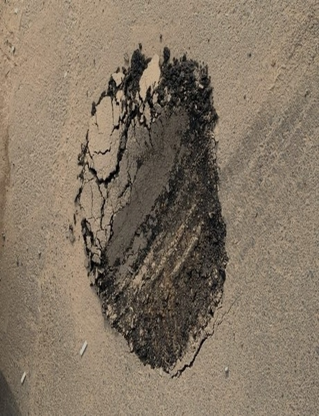
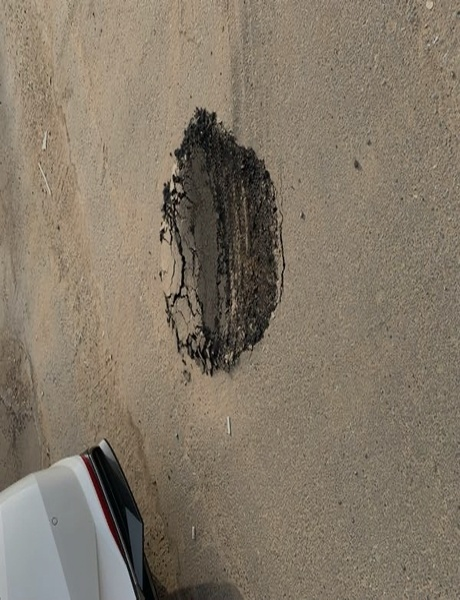
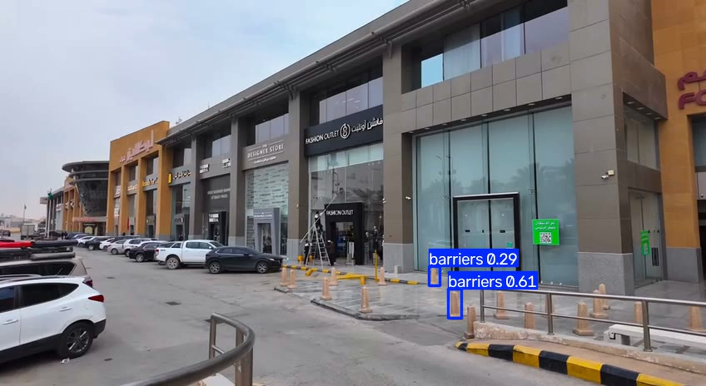
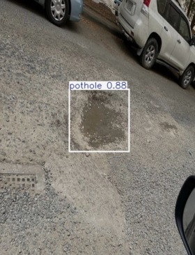
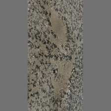
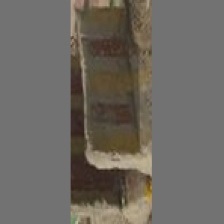
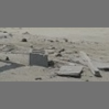
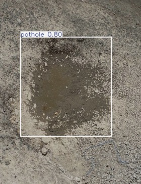
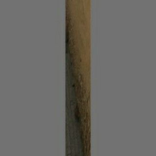

LIVE · RIYADHKASHIF / AI ROAD INSPECTION

كاشف
نحوّل كل كاميرا على الطريق إلى عينٍ ترصد الضرر.
فريق المشروعسارة · فاطمة · ألين · مهند
SAUDI ROAD
DAMAGE
DETECTION

01 · THE PROBLEMWAITING FOR A REPORT
المشكلةالضرر لا يدخل النظام…
إلا بعد أن يراه أحد.
بلاغٌ يدوي، صورة، موقع، ثم انتظار للفحص. وبين لحظة حدوث الضرر ووصول البلاغ، يبقى الطريق كما هو.
صور البلاغاتDATASET TOTAL



0صورة بلاغ
في البيانات
بانتظار الفحص

02 · THE IDEASEE IT BEFORE IT IS REPORTED
الفكرةماذا لو رصدناه
أثناء المرور؟
تمر الكاميرا بالطريق، فيكتشف كاشف الضرر ويحدد نوعه وموضعه—من دون انتظار بلاغٍ جديد.
كل رحلة عادية تصبح جولة فحص ذكية.

REC · CAM 01
pothole 0.91
الرصد يحدث في المشهد نفسه.
03 · THE DATAREAL SAUDI ROAD REPORTS

pothole
barriers
sidewalksبيانات من الواقعلم نُدرّبه على طريقٍ مثالي.
استخدمنا صور بلاغات حقيقية من مجموعة بيانات التلوث البصري للطرق العامة في السعودية.
31,795صورة بلاغ
41,804ضررًا محددًا
04 · DATA HYGIENENO LEAKAGE
المشكلة الخفيةثلاث صور…
لكنها بلاغٌ واحد.
التقسيم العشوائي قد يضع صور البلاغ نفسه في التدريب والاختبار، فيبدو النموذج أذكى مما هو عليه.
1,250صورة مكررة أُزيلت
39,547عينة نظيفة
TRAINTRAINTEST الاختبار رأى المكان من قبل؛ قد يقيس الحفظ بدل التعلّم الحقيقي.
05 · THE PIPELINEFROM RAW IMAGE TO DECISION
منهج العمل
من صورةٍ خام… إلى قرار.
10 · THE MODELSTHREE MODELS · TWO QUESTIONS
فريق الرصدثلاثة نماذج…
لسؤالين.
نموذجان يتنافسان على التصنيف، وثالث يبحث عن الضرر داخل المشهد كاملًا.
ما نوع الضرر؟EfficientNetB0 · ResNet50
أين هو في الصورة؟YOLOv8n
07 · CLASSIFICATION RESULTSTEST SET
ResNet50 · TESTROW = TRUE · COLUMN = PREDICTED
نتائج التصنيفدقة عالية…
مع فرقٍ صغير.
تفوق ResNet50 بفارق بسيط، بينما قدم EfficientNetB0 أداءً قريبًا بحجم أخف بكثير.
93.9%TEST
ACCURACY
0.919Macro F1
23.59MParameters

15 · DETECTION RESULTSYOLOv8n · TEST SET
نتائج الكشفنوع الضرر ومكانه
النتيجتان متقاربتان. النسخة المنظفة أهم لأنها تقيس بلاغات لم يرها النموذج في التدريب.
0.651mAP50
0.623PRECISION
0.625RECALL
YOLOv8n · CLEAN DATApothole 0.88
اختبار ميداني
ثم أخذناه إلى شوارع الرياض.
REC · YOLOv8n
فيديو حقيقي، حركة حقيقية، وإضاءة غير مثالية. هنا ينتقل النموذج من رقم على الورق إلى عين تعمل على الطريق.
18 · THE DEMOLIVE · KASHIF PLATFORM
الديموكاشف…
على الهواء.
كل ضرر يُرصد يظهر بنوعه وموقعه على الخريطة.
نوع الضرر تلقائيًاموقعه على الخريطةعربي · English
KASHIF · ENDTHANK YOU
شكرًا لكم
04 · LABEL EXPLORERYOLO FORMAT · ORIGINAL ANNOTATIONS
2 OBJECTS · SOURCE LABELS قراءة التسمياتكل سطر يصف ضررًا وموقعه
التسميات الأصلية بصيغة YOLO. رقم الفئة يتبعه مركز المربع وعرضه وارتفاعه، وكل القيم نسبية بين 0 و1.
class_id x_center y_center width height
المربعات تُرسم مباشرة من ملف labels.json المستخدم في العرض.
07 · CROP LABOBJECT CROP · PAD · RESIZE
تجهيز عيّنات CNNالمربع يصبح صورة تدريب
نقصّ كل ضرر منفردًا. نحافظ على نسبته بإضافة حواف رمادية، ثم نوحّد الحجم.
نبدأ من المربع الأصلي داخل الصورة.MIN BOX = 16 px
08 · AUGMENTATIONTRAIN SPLIT ONLY
التعزيز وموازنة الفئاتالصورة نفسها بأكثر من ظرف
نطبق تغييرات صغيرة أثناء التدريب فقط، ونستخدم أوزان الفئات حتى لا تهيمن الحفر على القرار.
الأوزان المحسوبة من عينات التدريب
barriers1.67
sidewalks1.87
pothole0.53
27,883TRAIN
5,793VAL
5,871TEST
00 · EFFICIENTNETB0CNN · TRANSFER LEARNING
CNN الأولEfficientNetB0
خفيف وسريع، مبني من وحدات MBConv ومدرّب مسبقًا على ImageNet.
ARCHITECTUREIMAGENET WEIGHTS
INPUT 224×224×33 CLASSES
ACCURACY / EPOCH
CONFUSION MATRIX · TESTROW = TRUE · COL = PRED
MODEL REPORTEFF-B0
TEST ACC93.3%
MACRO F10.914
PARAMS4.05M
SIZE31.6MB
EPOCHS19
TIME68.9m
أخف من ResNet50 بنحو ست مرات… والفرق في الدقة 0.6% فقط.
00 · RESNET50CNN · TRANSFER LEARNING
CNN الثانيResNet50
أعمق، بوصلات تخطٍّ تسمح بتدريب 50 طبقة بثبات.
ARCHITECTUREIMAGENET WEIGHTS
INPUT 224×224×33 CLASSES
ACCURACY / EPOCH
CONFUSION MATRIX · TESTROW = TRUE · COL = PRED
MODEL REPORTRESNET50
TEST ACC93.9%
MACRO F10.919
PARAMS23.59M
SIZE204.6MB
EPOCHS15
TIME59.5m
الأدق بين المصنِّفين… لكن بحجم 204.6MB.
13 · ERROR ANALYSISBOTH CNN MODELS WRONG

TRUE · sidewalksEfficientNetB0 · pothole ResNet50 · potholeتحليل الأخطاءأين اتفق النموذجان على الخطأ؟
الخلط الأكثر وضوحًا كان بين الرصيف المتكسر والحفرة، خصوصًا عندما يكون الضرر صغيرًا أو المشهد قريبًا جدًا.
209 صور من أصل 5,871
00 · YOLOv8nOBJECT DETECTION
نموذج الكشفYOLOv8n
يرى الصورة كاملة، ويرسم مربعًا حول كل ضرر مع نوعه ودرجة الثقة.
ARCHITECTUREPRETRAINED · yolov8n.pt
INPUT 640×640BOX + CLASS + CONF
TRAINING SETUPTESLA T4 · AMP
640IMG SIZE
100BATCH
30MAX EPOCHS
5PATIENCE
mAP50 PER CLASS · CLEAN TESTP 0.623 · R 0.625
الحفر الأوضح للنموذج، أما الأرصفة والحواجز فأصعب لأن حدودها أقل وضوحًا داخل المشهد.
MODEL REPORTYOLOv8n
mAP500.651
mAP50-950.424
PRECISION0.623
RECALL0.625
PARAMS3.01M
IMG640
نفس الدقة على بيانات نظيفة بلا تسريب… أي أن الأداء حقيقي.
كاشف